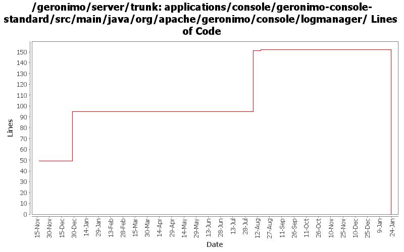

[root]/applications/console/geronimo-console-standard/src/main/java/org/apache/geronimo/console/logmanager

| Author | Changes | Lines of Code | Lines per Change |
|---|---|---|---|
| Totals | 14 (100.0%) | 177 (100.0%) | 12.6 |
| hogstrom | 3 (21.4%) | 97 (54.8%) | 32.3 |
| vamsic007 | 2 (14.3%) | 80 (45.2%) | 40.0 |
| kevan | 6 (42.9%) | 0 (0.0%) | 0.0 |
| jdillon | 3 (21.4%) | 0 (0.0%) | 0.0 |
(GERONIMO-3747) Moved applications/* to plugins/*
0 lines of code changed in 3 files:
GERONIMO-3390 Server Logs portlet - Web Access Log Viewer is broken
o Fixed the problem: "When date fields are empty, whether or not ignoreDates is checked, all search criteria are ignored."
4 lines of code changed in 1 file:
GERONIMO-807 Corrects errors in log viewing when different portlets on a page are accessed.
97 lines of code changed in 3 files:
GERONIMO-1749 Server Logs portlet - Web Access Log Viewer improvements
o Improved upon the patch submitted by Rakesh Midha. Thanks Rakesh.
o Added PUT and DELETE to request method
o Date select box does not refresh properly upon changing the year. Replaced select box with text field.
o Validate the dates and date range
o Support max results and start result to enable result browsing
76 lines of code changed in 1 file:
GERONIMO-2537 Update more src file headers to be compliant with new apache policy. Also made some updates for consistency
0 lines of code changed in 6 files: